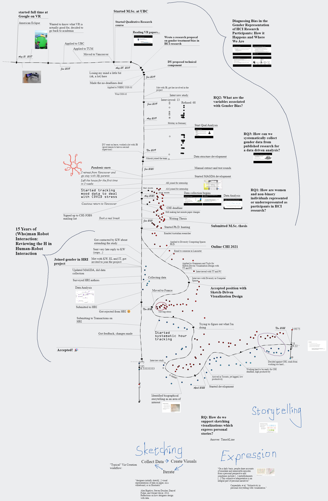
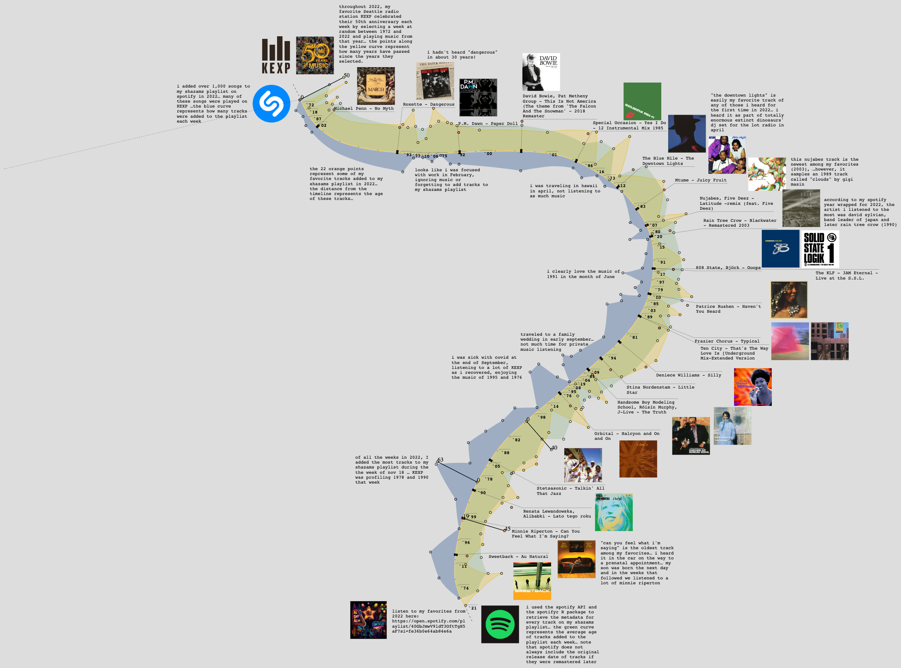
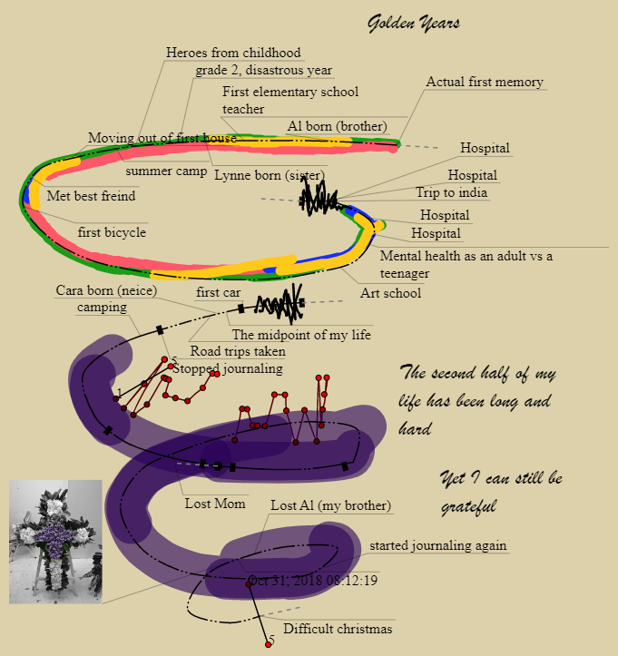

A visualization displaying work done on Mondays in January 2022
View in TimeSplines
2. Academic Career

This visualization displays the academic career of a new Ph.D. student.
Features of interest include the combination of mood data (red dots) and
work hours (blue dots). This visualization was used as the foundation for a
presentation of the students work, and therefore also includes slides for
presenting that work.
3. Music Listening

This visualization displays music listening data pulled from multiple media sources.
Features of interest include the use of line shape to accomodate media in an aesthetically pleasing
manner.
View in TimeSplines
4. Fictional Biography

This displays a fictional biography. Features of interest include
the use of a three dimentional line.
View in TimeSplines